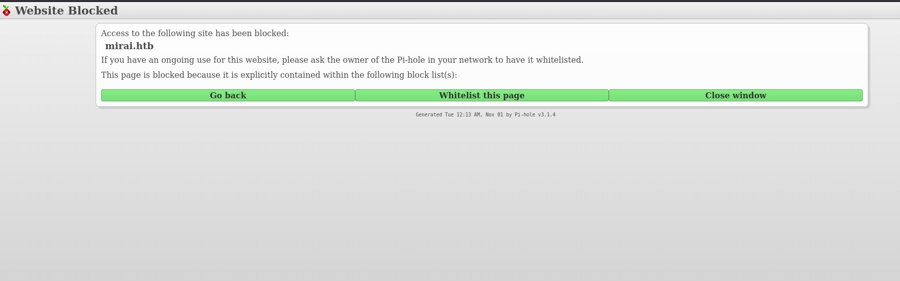
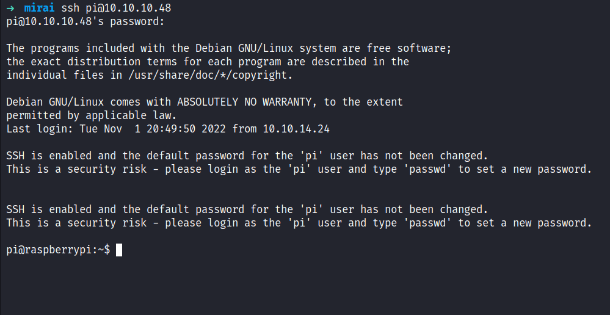
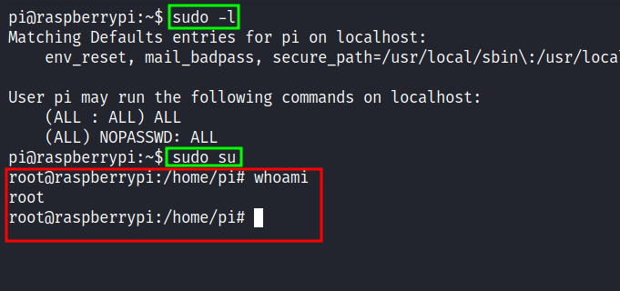

HackTheBox - Mirai Writeup
Table of Contents
Nmap
Like always, I’m going to scan the IP Address by using nmap but I’m going to scan the full port first. Then, I’m going to scan the only open ports.
nmap -p22,53,80,1776,32400,32469 -sCV -oN nmap/mirai 10.10.10.48
22/tcp open ssh OpenSSH 6.7p1 Debian 5+deb8u3 (protocol 2.0)
| ssh-hostkey:
| 1024 aaef5ce08e86978247ff4ae5401890c5 (DSA)
| 2048 e8c19dc543abfe61233bd7e4af9b7418 (RSA)
| 256 b6a07838d0c810948b44b2eaa017422b (ECDSA)
|_ 256 4d6840f720c4e552807a4438b8a2a752 (ED25519)
53/tcp open domain dnsmasq 2.76
| dns-nsid:
|_ bind.version: dnsmasq-2.76
80/tcp open http lighttpd 1.4.35
|_http-title: Site doesn't have a title (text/html; charset=UTF-8).
|_http-server-header: lighttpd/1.4.35
1776/tcp open upnp Platinum UPnP 1.0.5.13 (UPnP/1.0 DLNADOC/1.50)
32400/tcp open http Plex Media Server httpd
|_http-cors: HEAD GET POST PUT DELETE OPTIONS
|_http-favicon: Plex
| http-auth:
| HTTP/1.1 401 Unauthorized\x0D
|_ Server returned status 401 but no WWW-Authenticate header.
|_http-title: Unauthorized
32469/tcp open upnp Platinum UPnP 1.0.5.13 (UPnP/1.0 DLNADOC/1.50)
Service Info: OS: Linux; CPE: cpe:/o:linux:linux_kernel
The nmap scan result is completed. Looks like, I’m dealing with Debian (Jessie) machine based on the OpenSSH service banner. Since its have port 53 open, I’m going to add the hostname into the /etc/hosts file called mirai.htb (guessing).
Http: mirai.htb
Upon navigating through the mirai.htb on my browser. I’ve been greeted by the "Website Blocked" page. However, at the bottom of this page, I can see it says Pi-hole with the version number. As far as I know, Pi-hole is commonly used in “homemade” VPNs that run on Raspberry Pi.

Http: pi.hole/admin
By checking the page source code. I manage to find the hostname called pi.hole and I added it to my /etc/hosts file and also its have /admin directory.
44| <script src="http://pi.hole/admin/scripts/vendor/jquery.min.js"></script>
So, I navigated to the /admin directory and was greeted with the Pi-hole page. I managed to find the login form by clicking Login on the left sidebar and I’ll try simple credentials such as admin:admin. Then, it spits out this error and simply says "password is generated after installation and make sure to save it or it's too late". Based on this error, I guess the password must be random and it’s impossible to guess it.

Foothold: SSH
To be honest, I’m stuck at this point and clueless. Then, I realized something, this is a RaspberryPi. There are two ways, to interact with it either connect to monitor or SSH into it. Fortunately, with light googling, I managed to find the default SSH credentials. I’ll try it and BOOM!

PrivEsc: Sudo
I’m in as a pi user and the first thing I’ll check is the sudo permission with the command sudo -l. Surprisingly, this user has all access to everything and I ended up just running the command sudo su to get the root shell.

Flag: Root
I’m so excited that I get the root shell. However, I was stunned when I’ll try to retrieve the root flag because the flag isn’t in that file at all but this message was.

Upon reading that, I’ll check the devices that are connected to this machine with the lsblk command. Fair enough, I found the usb stick device that connected under /media/usbstick. So, I change the directory into it and it has two items in it. The first is the lost+found directory but unfortunately, it’s just an empty directory the other file damnit.txt has this message.

Damnit! Sorry man I accidentally deleted your files off the USB stick. Do you know if there is any way to get them back?
-James
Now, I’m really mad because why?? why!!!!!!! arggggg!!.. adkjlfhgasjkudfgjh *hahahaha* but when I’m thinking again it’s linux. Everything on linux is a file because of its nature of it. So, I’m thinking "how I'm going to read this usb stick device" then I remembered, I can use the strings command to display all the things human-readable. So, I’d ended up running strings on the partition itself /dev/sdb, and again BOOM! (double-BOOM!).

*EVIL LAUGH*